인민로 / 2008
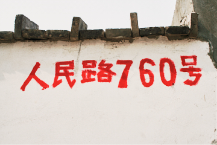
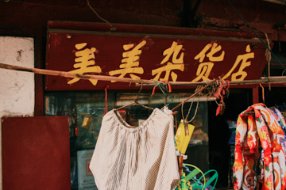
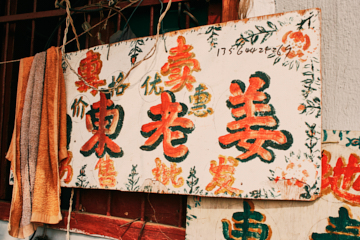
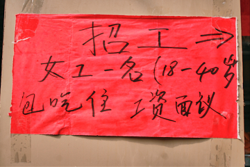
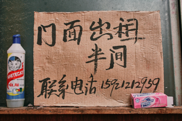
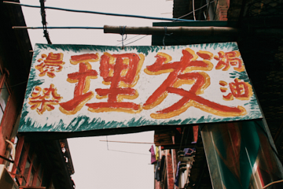
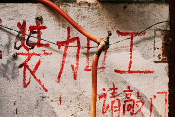
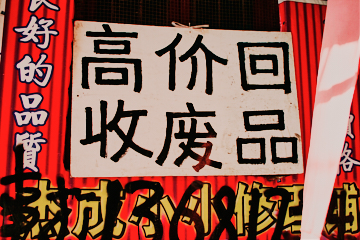
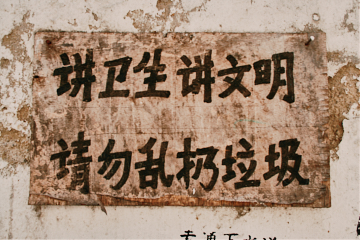
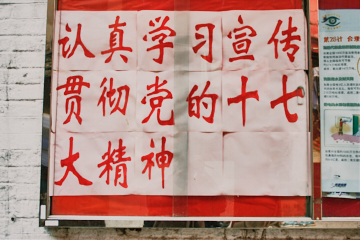
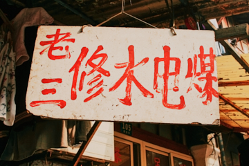
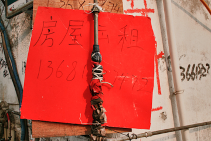
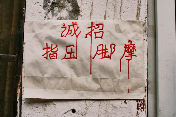
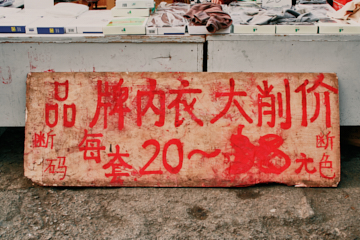
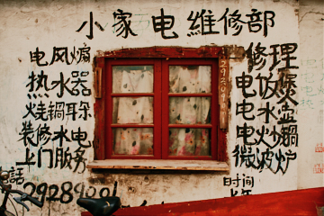
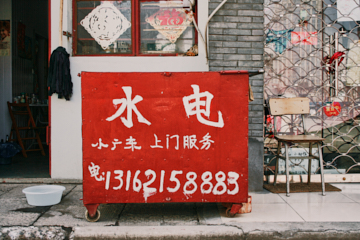
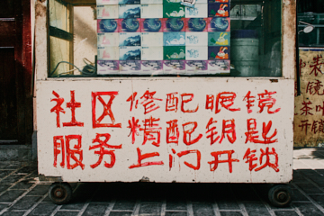
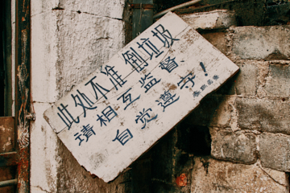
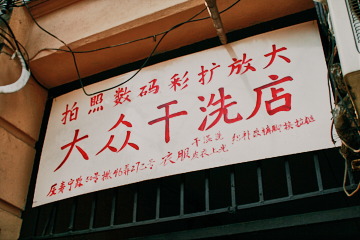
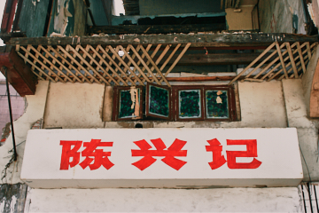
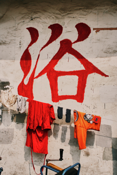
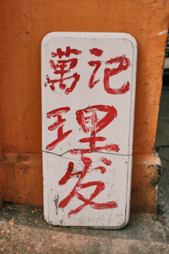
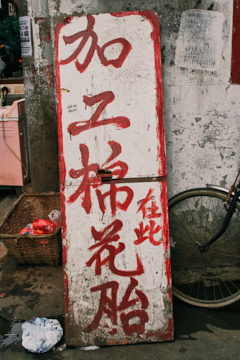
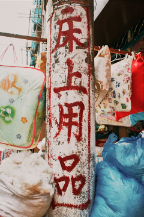
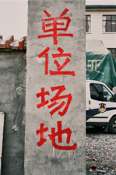
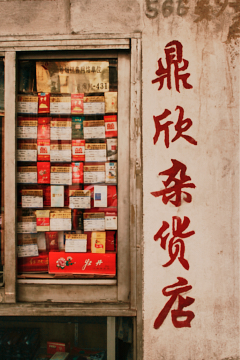
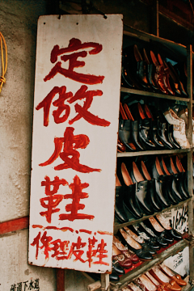
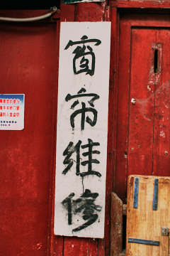
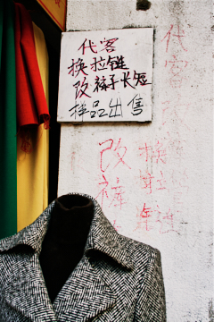
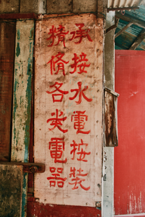
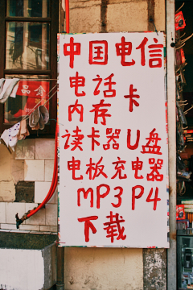
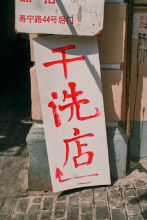
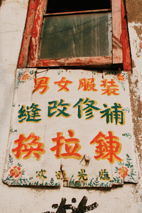
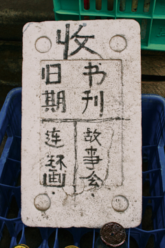
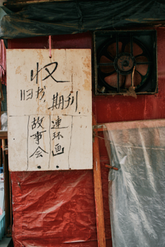
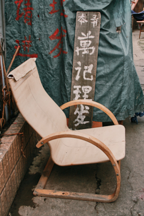
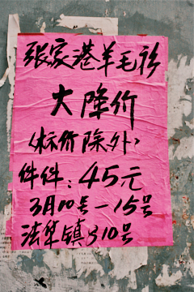
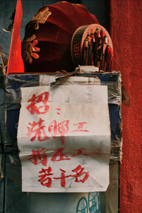
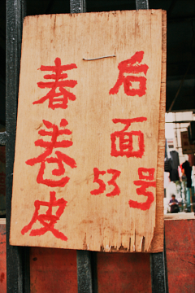
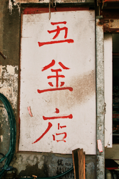
상해는 명암이 강하다. 남경동로의 번화가를 거닐면서 건물 사이의 후미진 곳을 좌우로 둘러볼 때 느꼈던 그림자는 깊었다.
개발논리가 우선하는 것은 다르지 않다. 여행책자에서 보았던 중국의 속담이 어렴풋이 기억에 있다.
'헌것이 가야만 새것이 온다',
경제 중심지인 상해를 설명하는 부분에 있어서 공감이 되었다. 그러나 헌것을 경제성으로 재단하는 것 같아서 어감이 좋지만은 않았다.
헌것, 상대적으로 개발이 지연되어 있는 재래시장을 찾아보았다.
인민광장을 포함한 번화가와 관광지로 유명한 상하이 옛 거리 사이에 위치해 있다. 이미 커다란 공간에 반쯤 허물어져 있는 몇몇의 건물이 있고
잔해가 널브러져 있다. 아마도 이곳은 곧 사라질 것이다.
황학동 만물시장의 지역성을 소재로 작업했던 경험의 연장에서 상해 지역의 손글씨 간판을 기록했다.
- 2020, 《만물시장》, Label gallery, 서울, 개인전
- 2008, 《Everyday is not the same》, BizArt, 상해, 단체전